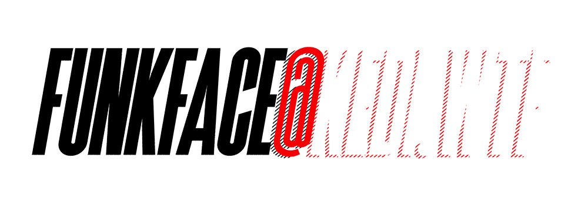

On an offbeat morning, KEDI.DESIGN, after serving nearly a decade at the forefront of digital service design, delivering state-of-the-art UX design and machine learning services to top telecom operators, airlines, banks, and entertainment services across Turkey and the globe, awoke from a surreal dream. Suddenly, it was no longer just KEDI.DESIGN, it was a larger, much grander cat, and in a state of bemused disbelief, it roared: WTF!
Its familiar digital fabric was now replaced with a vibrant, tactile fur that defied convention. Its binary gaze was now infused with a captivating blend of audacity and curiosity. The transformation had tipped the scales of normality.
After a seemingly warp-speed hiatus of about two years, KEDI.WTF found itself nurturing two groundbreaking ventures: VINYLZ, an innovative company reshaping the boundaries between the physical and digital realms with its collectible designer toys, and M4RS, a video game studio fearlessly carving new narratives in the web3 gaming landscape.
Every day, this unconventional feline entity embraced its Kafkaesque reality, living in an unpredictable symphony of absurdity and excitement. The metamorphosis it had undergone was more than just a physical change - it was a shift in its very existence. In this playground where digital and physical realms intertwined, KEDI.WTF was ready to leap, explore, and roar into new territories. The extraordinary saga of KEDI.WTF was only just beginning.
KEDI.WTF, in its Kafkaesque reality, is on a constant prowl for the audacious, the defiant, the audibly audible game-changers that disrupt the silence of conformity. Are you the disruptor, the trailblazer, the challenger we're on the lookout for?
In the untamed playground of KEDI.WTF, every maverick move gets its moment. If your audacious angle is as jaw-droppingly jazzy as we foresee, we're ready to fuel the game and let your innovation steal the show. KEDI.WTF might not just offer you our mastery in design and development. We're ready to sponsor the show and let your move rock the spotlight.
Ready to drop the beat of your audacious angle? Send your thoughts directly to our inbox at and let's set the stage ablaze together!
